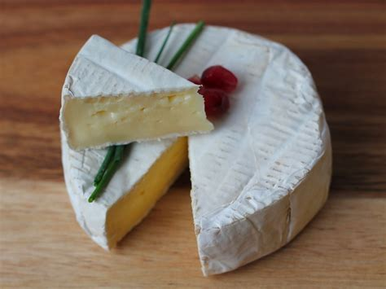
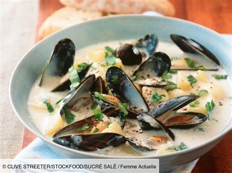
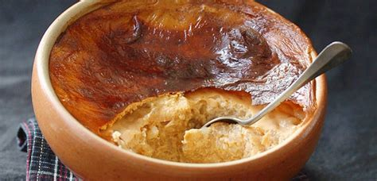
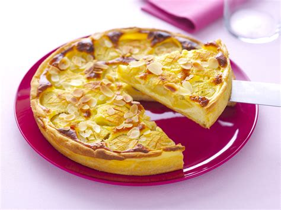
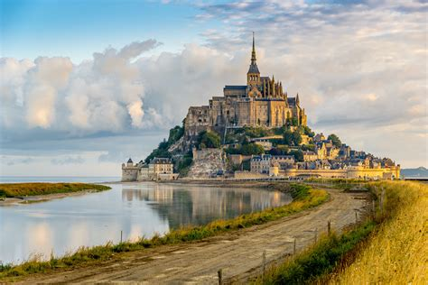
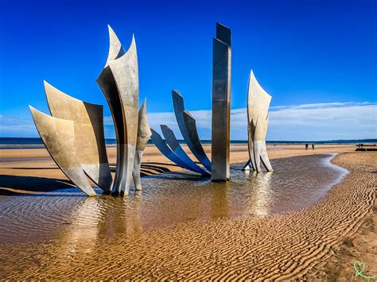
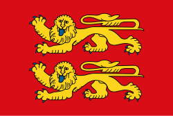
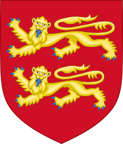

Normandie
Vue d'ensemble
La Normandie, située dans le nord-ouest de la France, est une région côtière riche en histoire et en charme naturel. Elle est célèbre pour les plages du Débarquement de la Seconde Guerre mondiale, le Mont-Saint-Michel, les maisons à colombages et la campagne verdoyante. Son mélange de patrimoine médiéval et de paysages maritimes en fait une destination unique.
Informations Rapides
- Capitale: Rouen
- Langue régionale: Français (dialecte normand historiquement)
- Population: ~3,3 millions
- Célèbre pour: Mont-Saint-Michel, plages du Débarquement, camembert, cidre
- Le saviez-vous? Guillaume le Conquérant, devenu roi d’Angleterre en 1066, était normand !
Plats Populaires
Camembert

Moules à la crème

Teurgoule

Tarte Normande

Monuments célèbres
Mont-Saint-Michel

Plage d'Omaha

Cathédrale de Rouen
Port de Honfleur

Tapisserie de Bayeux
Meilleure période pour visiter
La fin du printemps jusqu'au début de l'automne (mai à septembre) offre la météo la plus agréable. Juin est une période marquante pour les commémorations du Débarquement. L'été est idéal pour la plage, et l'automne pour les festivals de cidre.
Symboles Régionaux
- Drapeau: 
- Logo: 